Top 10 de las amenazas de seguridad incluyendo herramientas
Top 10 de las amenazas de seguridad incluyendo herramientasEl malware es un término general para software diseñado para causar daño. Incluye virus, troyanos, ransomware, spyware, entre otros.
Herramientas de ataque
Emotet: El troyano bancario Emotet fue identificado por primera vez por investigadores de seguridad en 2014. Emotet fue diseñado originalmente como un malware bancario que intentaba colarse en el ordenador y robar información sensible y privada.

TrickBot: Los ransomwares son programas maliciosos, cuya función es encriptar los archivos más importantes del ordenador de una víctima y cobrar una suma de dinero como rescate para recibir la clave de descifrado.

WannaCry: Es un ejemplo de ransomware de cifrado, un tipo de software malicioso (malware) que los cibercriminales utilizan a fin de extorsionar a un usuario para que pague

herramientas de defensa
Antivirus (Norton, Bitdefender): Actúa contra todas las amenazas digitales, desde virus, gusanos y troyanos, hasta ransomware, exploits de día cero, rootkits y spyware.
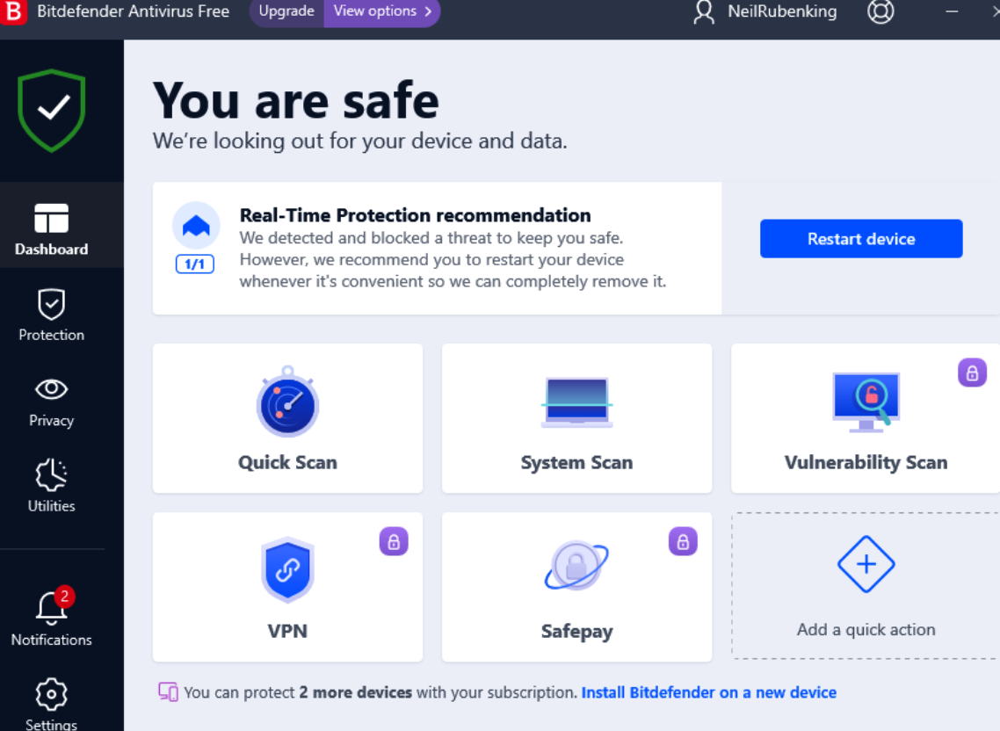
Es un ejemplo de ransomware de cifrado, un tipo de software malicioso (malware) que los cibercriminales utilizan a fin de extorsionar a un usuario para que pague.
Firewalls: Es una solución de seguridad de redes que protege su red del tráfico no deseado.
Sistemas de detección de intrusos (IDS): Es una herramienta de seguridad de red que monitoriza el tráfico y los dispositivos de la red en busca de actividades maliciosas conocidas.
Tipo de malware que cifra los archivos de la víctima y exige un rescate para restaurar el acceso.
Herramienta de ataque
Revil: El virus suele distribuirse por medio de técnicas de phishing, que engañan a los usuarios para que abran archivos maliciosos camuflados como archivos adjuntos de correo electrónico, documentos y hojas de cálculo.

LockBit: Es una subclase de ransomware conocido como «virus de cifrado» que exige como rescate el pago de dinero a cambio de descifrar archivos.
Se centra más en las empresas y organizaciones gubernamentales y no tanto en los particulares.
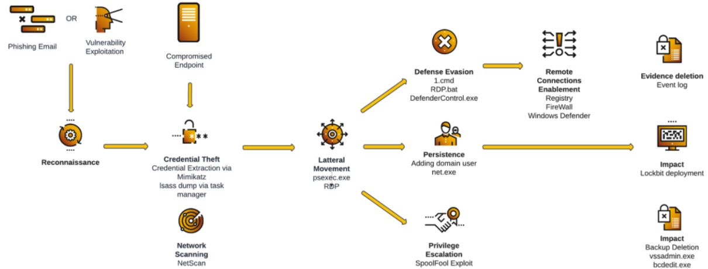
DarkSide: Es utilizado para atacar a múltiples organizaciones grandes y de altos ingresos.
Los atacantes utilizan el cifrado y el robo de datos confidenciales, y amenazan a estas entidades a cambio del pago de una la demanda de rescate.

Herramientas de defensa
EDR (Endpoint Detection and Response): Es un tipo de solución de ciberseguridad diseñada para monitorizar, detectar y responder actividades malintencionadas en endpoints de una organización (también conocidos como puntos finales de contacto).

Táctica de ingeniería social en la que los atacantes se hacen pasar por entidades confiables para obtener información confidencial.
Herramienta de ataque
Kits de phishing como Evilginx2: Siendo un man-in-the-middle, captura no solo los nombres de usuario y las contraseñas, sino que también captura los tokens de autenticación enviados como cookies. Los tokens de autenticación capturados permiten al atacante eludir cualquier forma de 2FA habilitada en la cuenta del usuario (excepto U2F).

Gophish: Es una plataforma gratuita y de código abierto diseñada especialmente para facilitar la formación de terceras personas en cuanto a seguridad.
Gracias a esta herramienta vamos a poder lanzar campañas de phishing simuladas y monitorizadas y analizar los resultados según aquellas que hayan tenido éxito y las que no, teniendo una idea más clara de hacia dónde enfocar una posible formación adicional.
Se centra más en las empresas y organizaciones gubernamentales y no tanto en los particulares.

Herramientas de defensa
Autenticación multifactor (MFA): Es crear una defensa en capas que dificulte que una persona no autorizada acceda a un objetivo, como una ubicación física, un dispositivo informático, una red o una base de datos.
Si un factor se ve comprometido o roto, el atacante todavía tiene al menos una o más barreras que romper antes de entrar con éxito en el objetivo.


Formación en concienciación sobre phishing: La formación para la concienciación sobre el phishing es la educación continua que se imparte a los empleados para que comprendan cómo funciona el phishing, cómo detectar los signos reveladores de un ataque y qué acciones seguras deben tomar cuando se sientan atacados

Táctica de ingeniería social en la que los atacantes se hacen pasar por entidades confiables para obtener información confidencial.
Herramientas de ataque
LOIC (Low Orbit Ion Cannon): Es una herramienta que se suele utilizar para lanzar ataques DOS Fue desarrollado originalmente por Praetox Technology como una aplicación prueba de estrés de la red, pero ahora es de código abierto y se utiliza sobre todo con fines maliciosos.
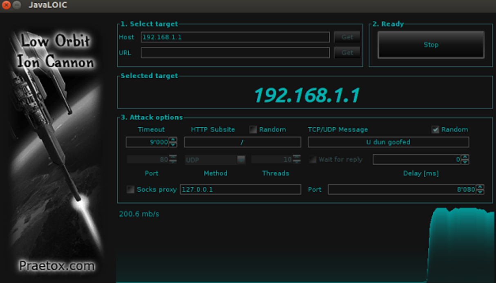
HOIC (High Orbit Ion Cannon): Es una popular herramienta utilizada para lanzar ataques DoS y DDoS, cuyo objetivo es inundar la red de una víctima con tráfico web y desconectar un sitio o servicio web.
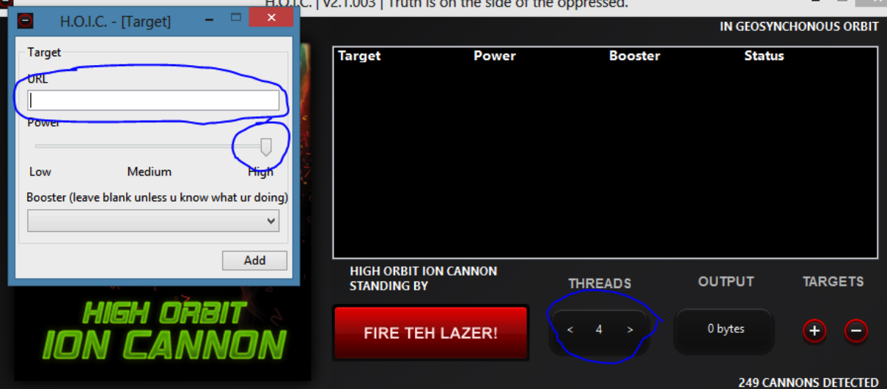
Mirai Botnet: Es un malware que infecta dispositivos inteligentes que funcionan con procesadores ARC, convirtiéndolos en una red de bot controlados a distancia o «zombies». Esta red de bots, llamada botnet, se suele utilizar para lanzar ataques DDoS.

Herramientas de defensa
Cloudflare: Es un proveedor de servicios de infraestructura de seguridad web que se acopla a tu hosting y te ofrece una variedad de productos diseñados para mejorar el rendimiento y la seguridad de tu sitio web.
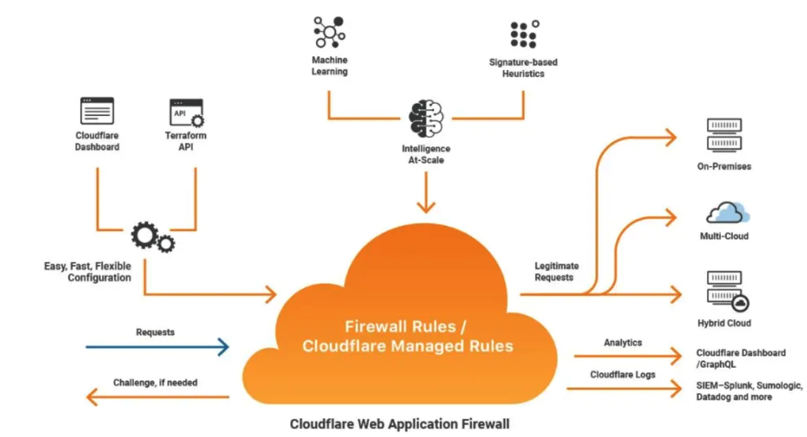
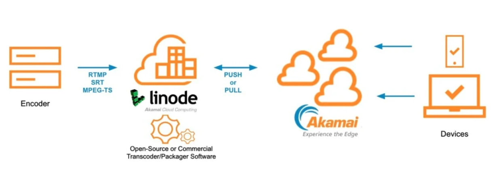
Los atacantes explotan vulnerabilidades no parcheadas en software o sistemas operativos.
Herramientas de ataque
Metasploit: Es unframework de código abierto utilizado principalmente para realizar pruebas de penetración y desarrollar y ejecutar exploits.

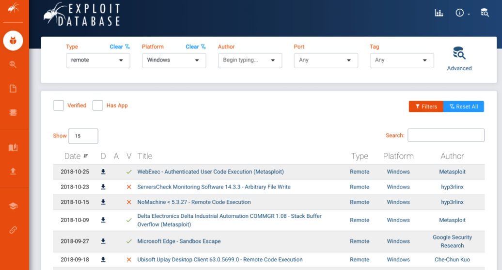
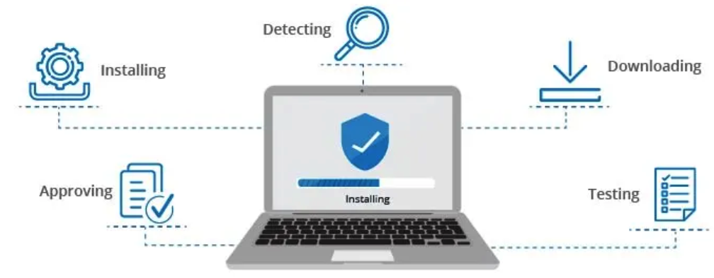
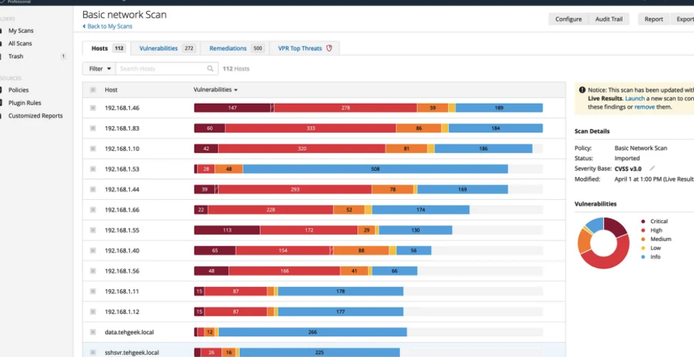
Los atacantes interceptan y alteran la comunicación entre dos partes sin que estas lo sepan.
Herramientas de ataque
Ettercap: Es un sniffer/interceptor/logger para redes LAN con switchs, que soporta la disección activa y pasiva de muchos protocolos (incluso cifrados) e incluye muchas características para el análisis de la red y del host (anfitrión).
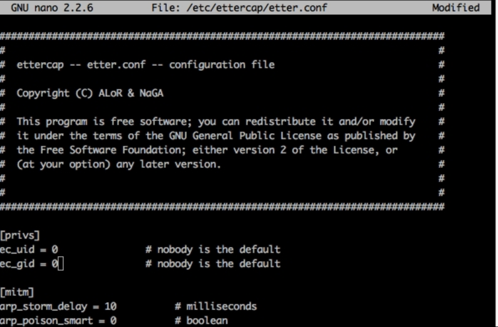
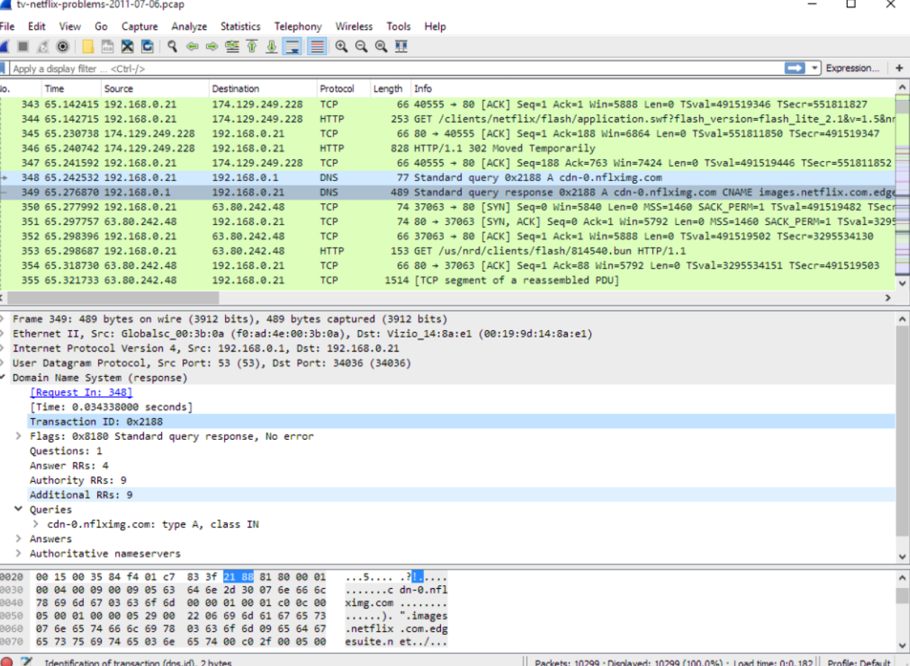
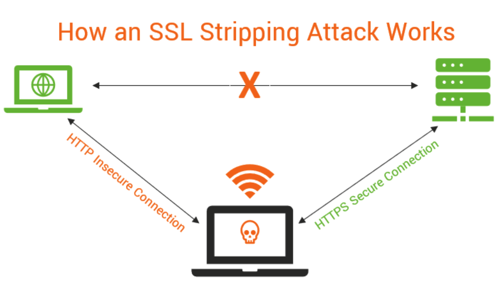
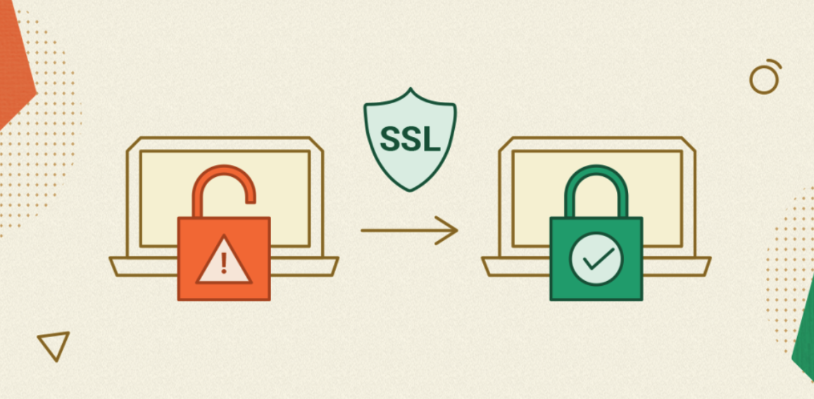
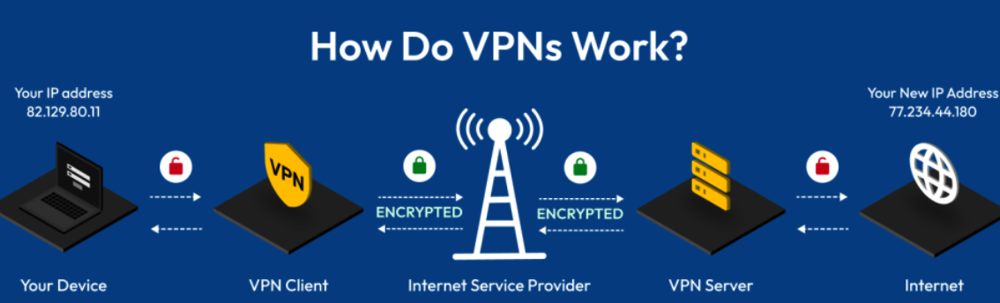